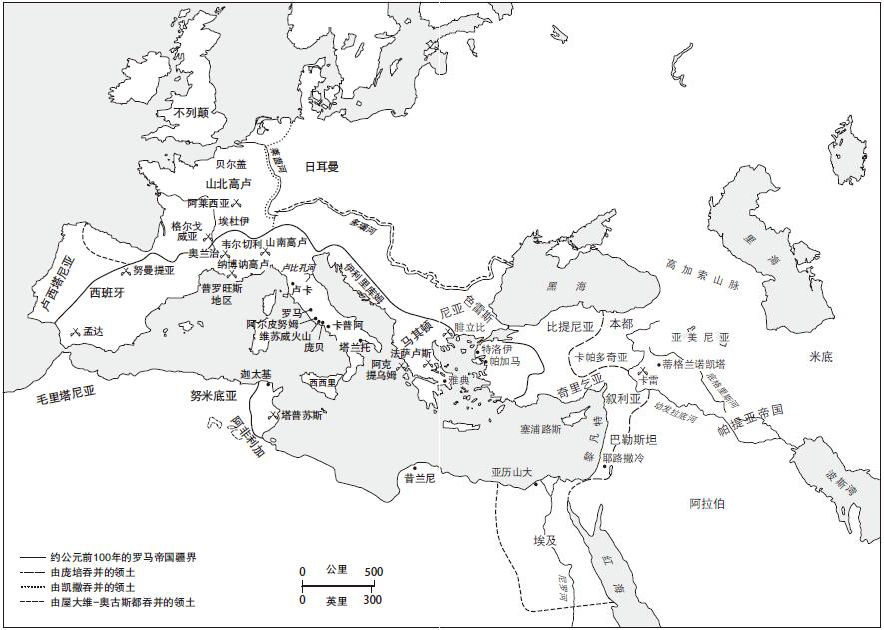
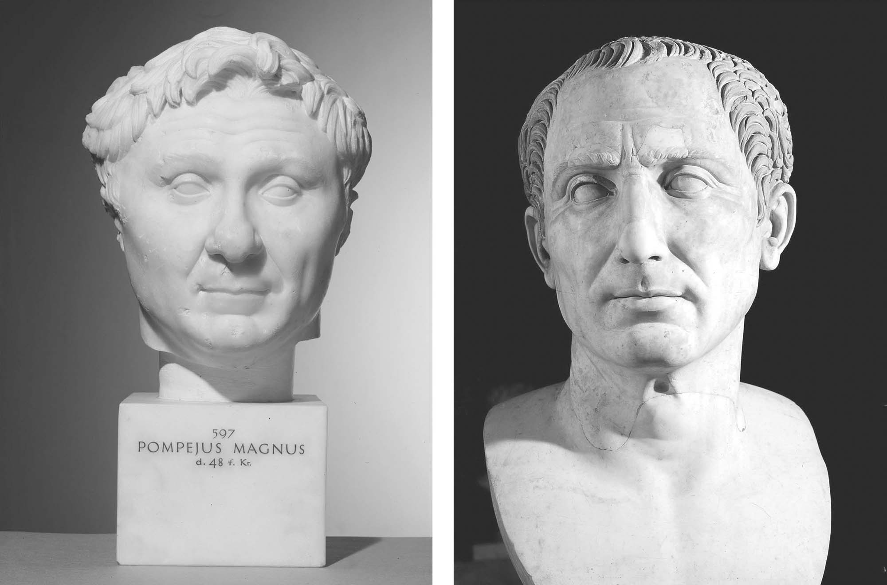

历史上少有时代能比罗马共和国那充满创伤的最后一段时光对后世拥有更强大的吸引力。古代世界的最强权在血腥的纵欲中颓然崩塌。公元前2世纪的危机削弱了元老院的集体权威，同时见证了操控罗马共和国晚期政坛的首批军阀的出现。在盖乌斯·马略和卢修斯·科尔涅利乌斯·苏拉之后是马尔库斯·里奇尼乌斯·克拉苏、格涅乌斯·庞培·马格努斯以及盖乌斯·尤利乌斯·凯撒，这三人组成了所谓的“前三头”政权。克拉苏死后，庞培和凯撒的同盟在内战中瓦解，后者成为胜利的一方。凯撒在公元前44年3月15日被刺身亡并未能拯救危亡中的共和国。马尔库斯·尤尼乌斯·布鲁图斯及被称作“解放者”的同胞们所采取的孤注一掷的行动只会使罗马陷入另一场长达十年的内斗之中。最终，凯撒的继子盖乌斯·尤利乌斯·凯撒·屋大维亚努斯在公元前31年的阿克提乌姆战役中击败了马尔库斯·安东尼和克莱奥帕特拉。四年后，他取名奥古斯都，此为罗马帝国顶替罗马共和国的标志。
站在后人的角度，我们很容易将罗马共和国的衰亡解读为几近命中注定，认为它是从一个无以支撑的高度不可避免的一次坠落。并没有对其间发生的一系列事件起决定性作用的外在威胁存在。冲突源自内部，比如共和国社会和罗马政府不断挣扎做出调整以适应统治庞大帝国的需求，还有驱使罗马向外扩张的那些压力，即罗马贵族为获取荣耀和尊威而产生的竞争。私人军队和不断增加的财富也使危机进一步加深，直到尊威、财富和军事权力落入一人之手，实现独裁统治。但没有多少历史作品将罗马共和国的衰亡视作必然，即便在最后关头，依然有人为共和国及其理想做好了赴死的准备。罗马共和国的灭亡并不是一个命定的故事，而是一个关乎野心和自我牺牲、天才和愚蠢的纯粹人为之事。在共和国最后岁月那长存于世的魅力中，蕴含的正是这些普遍的人类特质。
第一个给共和国致命一击的人是苏拉。当他在公元前88年向罗马进军，以阻止其统帅权移交到仇敌盖乌斯·马略手中之时，苏拉就已对共和国最本质的那部分构成威胁。由于坐拥私家部队，军阀苏拉拥有无论是元老院集体权威还是公民大会都无法阻挡的权力。然而，在攻下罗马后，苏拉并未立即开始他的独裁统治。他最关切的问题是首先击败本都国的米特拉达梯，后者入侵罗马亚细亚的行为引发了这一危机。此后的五年中，苏拉靠着罗马的政治力量继续其在东方的征服。然而，当他离开罗马时，苏拉的政敌发起了反扑。尽管马略在公元前86年，即其政治生涯中第七次当选执政官后不久便逝世，当苏拉于公元前83年返回意大利时，他发现敌人已经和罗马以前的世仇萨莫奈人联合起来，后者是同盟者战争结束后依然同罗马作对的唯一一支意大利民族。苏拉的回应是再次向罗马进军，途中吸纳了带着私家军队的克拉苏和庞培的力量。有了后者的协助，在罗马科林门前的一场血战之后，苏拉击败了敌人。
现在，罗马共和国落入苏拉之手。为了规范自己的地位，他复兴了旧时独裁官一职，该官职自第二次布匿战争以后便再未设立。然而，和传统的罗马独裁官不同，他不受该职任期最长不得超过六个月的制度限制，而是无限期担任该职。在许多同代人眼中，苏拉事实上已与国王无异。在武力的支持下，苏拉转向政敌开刀。有史以来第一次，罗马开列了清洗名单—其上列有一长串不许司法上诉而直接予以清除的人名。至少有80名元老和2600名骑士被杀或遭流放，真实数字可能还会更高。苏拉把死者的财产充公而获得了大量土地，再发给他许诺过的那些为其效忠的士兵（比如庞贝城便成为苏拉所建的一个军事殖民地）。同样，苏拉的支持者也通过廉价购买被清洗之人的地产而大肆搜刮。克拉苏和庞培成了罗马最富有的两人。
独裁官职的恢复以及令人胆战的清洗名单让苏拉成了罗马史上最遭人仇视的人之一。但看上去似乎比较矛盾的是，在本质上，苏拉是一名真正的共和派。一旦他的地位得到巩固，苏拉便着手恢复元老院在格拉古时代之前所拥有的权威。因此，防止像马略以及他本人这样拥有异乎寻常的政治履历进而威胁到元老院集体和谐的军阀出现就变得格外重要。为此，苏拉强行规定了每个高级官职的就任者所必须拥有的最低年龄标准，以及从财务官升至执政官之间遵循的有序序列。他将财务官的数量增加到20名，法务官数量增加为8名以减轻政府负担，同时还将陪审团重新置于元老院控制之下。另外，他削弱了让其在公元前88年失掉统帅权的保民官权力。保民官拥有的否决权被限制在保护公民个人权责之内而无法再过问国事。任何由保民官提请的法律必须得到元老院认可。更有甚者，凡已担任保民官一职的人将不得再出任其他官职，这让那些拥有政治野心的人对该职位纷纷避让。至少从理论上说，这避免了像提比略或盖乌斯·格拉古这样的人再次出现。

地图7 最后一个世纪的罗马共和国
公元前79年，改革甫一结束，苏拉便主动辞去一切公职，归隐田园。他的这一举动再次令罗马世界瞠目结舌。无论对当代学者而言，还是对当时的人来说，苏拉就像个谜。他野心勃勃又残酷无情，将罗马贵族为追求荣耀而进行的竞争提升到一个新的高度，却又在人生的最后几年致力于恢复罗马共和国的传统价值观。他死于公元前78年，墓碑上只有一句话：“没有更好之朋友，亦无更坏之敌人。”但他为巩固罗马共和国所做的努力注定是徒劳的。摧毁苏拉改革成果的那个人早在这位独裁者死前便已现身—他就是“伟大者”格涅乌斯·庞培。
当庞培在公元前83年带着他的三个军团加入到苏拉阵营之时，他年仅23岁，还未担任过任何公职。但庞培拥有大量财富、才华、个人魅力以及与之相匹配的超凡自信。在军旅生涯的早期阶段，庞培就赢得“少年屠夫”的绰号。但他更喜欢的一个称号是“马格努斯”（意为“伟大的”或“伟大者”），这是他有意效仿亚历山大大帝而给自己的一个尊称。像庞培·马格努斯这种对既定秩序构成挑战，无视共和国传统政治晋升道路的人就是苏拉所极力预防的典型人物。但元老院似乎无力阻止庞培在民间日益上涨的呼声和威望。据说他曾对苏拉说出这样的话：“更多的人崇拜东升的骄阳而非西山的落日。”
从苏拉之死到“前三头”出现的20年被视作罗马共和国走向衰亡的一个关键时期。事实上，苏拉改革已使元老院的力量得到加强。政府结构和司法体系得到改善，意在恢复元老院统治的基石也已铺好。所需要的只是一段时期的和平和安定来巩固改革后的共和国体制。然而，贵族竞争和维持罗马帝国庞大规模之间的需求而产生的张力让这一时期的到来化为泡影。公元前70—前60年代的罗马史充满着一系列危机，其主导者是操纵了罗马军事机器的军头们。
苏拉刚一去世，执政官马尔库斯·埃米利乌斯·雷比达就试图攫取独裁权力。这其实只是一个小问题，却暴露了元老院的虚弱，因为元老官员手中没有用来抵抗叛军的军队。而庞培此时恰好离事发地不远，他动用手中的士兵将雷比达叛乱镇压下去。随后，他在元老院的授意下前往西班牙，对付马略的老部将独眼龙昆图斯·塞多留惹起的麻烦。双方之间的战争十分激烈，因为塞多留是个打游击战的高手。然而，庞培慢慢占了上风，塞多留最终被军中叛徒所杀。军事胜利为庞培带来了荣耀，他对罗马西班牙行省的整治又带给他大量的财富和依附民。以上之事均发生在公元前71年庞培返回罗马城之前。
庞培不在意大利的日子里，罗马又遭到一个新危机的摧残，这就是古代最有名的那场奴隶起义。公元前73年，一个色雷斯角斗士率领70余人从卡普阿的角斗学校逃走，此人名叫斯巴达克斯。在将无家可归的农民和奴隶聚在一起后，由他训练的一支武装力量于公元前72年击败了罗马执政官率领的军队，并蹂躏了维苏威火山附近及外围四周的意大利中部大片地区。公元前71年，被选出并击败斯巴达克斯的将领是克拉苏。克拉苏系统而又无情地将起义军绞杀殆尽。斯巴达克斯战死沙场，6000多名追随者被逐一钉死在从卡普阿通向罗马的阿皮亚大道之上。起义军中只有一小批人逃了出去，却又被返回意大利的庞培军一网打尽。斯巴达克斯起义因其传奇而不朽，但元老军队从叛军那里受到的羞辱进一步削弱了元老院的整体力量。同时，它还要面对两个敌对军阀的汹汹气势。
在斯巴达克斯被击败后，无论庞培还是克拉苏都未解散手中的军队。在将士兵驻扎在罗马城外后，两人为竞选执政官而达成协议，站在了一起。克拉苏此前曾担任过政府职务，也具备了法定候选人的足龄标准。但勉强达到36岁的庞培还从未担任过任何政府官职。然而，公元前70年他们的联合竞选最终获胜，作为执政官的庞培进入了元老院，这是对共和国传统的一个公开蔑视。在两人任职期间，保民官的权力全部得到恢复，这是对苏拉试图强化元老院权威的又一沉重打击。就在这时，一个潜伏于一角而被长期忽视的新危机出现了，它进一步扰乱了本已薄弱的权力平衡。
在罗马诞生之初，海盗就已成为地中海世界的一个危险。但到了公元前1世纪，这个危险到了将要泛滥的程度，尤其是在罗马灭掉从前能对海盗进行制约的海军强国迦太基和罗德岛后。到公元前60年代早期，意大利沿海城镇便暴露在海盗攻击之下，罗马日益增加的人口所依赖的粮食供给也因此遭到威胁。年轻的尤利乌斯·凯撒在东方旅行途中曾被一个海盗团伙俘获。在支付了高额赎金获救后，他回过头来把那些抓他的人全钉死在十字架上。但其他的罗马人就没这么幸运了。公元前67年通过的一项法律授予庞培统帅军队权以消除海盗威胁。庞培获得的权力十分巨大—他指挥着一支由124000余人和270艘船只组成的庞大部队，这是共和国有史以来分配给单个将领的最大武装力量。他在海上拥有全权的“统帅权”，同时这一权力还延及海岸80公里以内的内陆地区。握有如此强大的兵力，在不到五个月的时间内，庞培将地中海上的海盗一扫而光，并攻陷了位于亚细亚南部的海盗窝点奇里乞亚。他用一种较为典型的流行方式纪念了这一伟绩，也就是给奇里乞亚的首府起了个新名字—庞培波利斯。这也是对他心目中的英雄亚历山大大帝的一种效仿。
在获得空前胜利之后，庞培趁热打铁，又取得了正在进行中的米特拉达梯战争的指挥权。本都国王米特拉达梯是罗马最顽固的敌人，他和罗马之间的战争打打停停进行了20多年。但当庞培成为这场战争的罗马统帅之时，米特拉达梯已是强弩之末。他最终于公元前63年被杀，此后庞培对罗马在东方的领地进行了重新规划。在罗马首次将霸权延及希腊东方世界的一个多世纪后，沿海地区的本都、比提尼亚、奇里乞亚和叙利亚最终成为罗马行省。在这些行省之外的疆域则由认可罗马霸权的依附国施行统治，其中包括犹大和亚美尼亚。尤其是亚美尼亚充当了罗马和公元前1世纪崛起的劲敌—位于伊朗地区的帕提亚帝国之间的一个重要缓冲带。新建行省贡献的税收是罗马国家收入的两倍有余，但庞培又从那些急于用钱保住王位的国王手中取得了大量财富。此外，广大的地中海东部地区的众多人口成了庞培的依附民。作为历史首富的庞培回到罗马城，并于公元前62年举办了迄今为止最令人叹为观止的一场凯旋式。
他人如何才能与如此辉煌的胜绩相匹敌？罗马贵族竞争的标杆几乎被抬到高出视线以外的地方，因此元老院内许多人对庞培创立的不世之功感到恐惧。对策就是与之保持距离。一回到罗马，庞培就要求元老院批准他在东方做出的调整，同时要求授予他曾允诺过的老兵以土地。此举得到老对手克拉苏的支持，因为后者希望通过东方地区的税收来敛财。但庞培遭到了来自保守派元老的集体反对，其领头羊是令人畏惧的马尔库斯·波尔奇乌斯·小加图。他在道德节操和坚守原则拒绝妥协两方面以曾祖父老加图为榜样。庞培并没有试图用武力解决问题，因为他担心苏拉当年遭到的怨恨会落到自己头上，同时他也缺乏政治手腕来达到目的。正是这一僵局将迄今为止一个相对较小的角色推向了舞台中央，他就是盖乌斯·尤利乌斯·凯撒。
生于公元前100年，凯撒是著名的尤利乌斯家族的后裔。该家族可以通过罗慕路斯一直上溯到埃涅阿斯和女神维纳斯时代。古老而辉煌的家族史是个人享有尊威的巨大资源，但凯撒的家庭在政治领域却表现得没那么突出。凯撒政治生涯的早期阶段要比庞培循规蹈矩得多。他在常规年龄按惯例出任较低级别的官职，最突出的业绩是在公元前63年赢得了大祭司竞选，此为国家宗教最高职位。在远征西班牙的战争中获得了几次小胜后，凯撒于公元前60年返回罗马，他希望元老院为其举行凯旋式，并要求执政官竞选。在加图和保守派元老的强迫下，他只得从凯旋式和职位竞选中选择其一。凯撒选择了后者。政治天赋和个人魅力的完美结合使他将对手庞培和克拉苏团结在身后。凯撒答应满足二人心愿，作为回报，克拉苏和庞培为凯撒竞选公元前59年的执政官提供金钱和影响力。
“前三头”就这么形成了。这是一个三人之间结成的非正式同盟，庞培迎娶凯撒的女儿尤利娅象征着同盟的缔结。凯撒如期当选执政官，尽管他的同僚，加图的朋友马尔库斯·卡普尔尼乌斯·比布鲁斯是个坚定的反对派。由于无法获取元老院的支持，凯撒把他的法律带到了公民大会的现场。在庞培和克拉苏的支持下，法律得以顺利通过。在广场上被人泼了一身“污秽之物”后，比布鲁斯就辞去了公职。赋闲在家的他宣称观察到了不吉的预兆。从技术层面讲，这种宗教干预可以让凯撒的法律变为非法，因为其未得到神的同意便得以通过。在凯撒晚年这一控诉又为他带来困扰。而此时，三巨头的统治已无人能够挑战。凯撒的法律给了庞培老兵孜孜以求的土地，并批准了他在东方的规划和税收征缴。执政官任期刚结束，凯撒便前往高卢，为自己寻求财富和荣耀。
这是凯撒所写《高卢战记》的开头语。此书（以第三人称写成）是他为证明高卢战争的正当性并庆祝征服高卢而创作的。《高卢战记》的大受欢迎让凯撒征服带上浪漫的色彩，尤其是记录他和高卢酋长维钦格托里克斯之间战争的故事，后者在阿莱西亚战役中被征服前曾于格尔戈威亚一役中击败了凯撒。用一种苛刻的眼光看，高卢战争可以更精确地被称为种族灭绝战争，因为十年战争期间被凯撒所杀及俘虏的人口大约在100万。凯撒的军事行动另一重要之处在于，罗马第一次越过莱茵河进入日耳曼，并横跨英吉利海峡进入不列颠。虽然这些征服行动收效甚微，它们却无可置疑地证实了凯撒的野心和军事实力。他现在拥有了荣耀、财富和足以对抗庞培霸权的老兵力量。
回到罗马，麻烦进一步酝酿。因反抗三头统治而遭到驱逐被迫暂时流放的西塞罗和元老院保守势力联合起来，致力于将庞培从凯撒一边拉拢过来。由于“前三头”出现式微的苗头，凯撒中断了正在进行中的高卢战争，于公元前56年在卢卡召开会议，会见了另外两头。卢卡会谈延续了三者间的同盟。凯撒继续保有高卢战争的指挥权，而在克拉苏远征东方以寻求荣耀之前，他和庞培再次联手，担任了次年的执政官。但此时裂隙已经显现。公元前54年，庞培和尤利娅之间幸福的婚姻因后者难产致死而画上句号，这给庞培和凯撒的同盟以致命一击。在两个更具野心的同僚之间充当平衡角色的克拉苏对帕提亚帝国发起了侵略战争，而罗马还未认识到后者的实力。克拉苏及其率领的军队于公元前53年的卡莱战役中被帕提亚重装骑兵和马上弓箭手合力屠杀。自此，罗马世界分裂为两大阵营。庞大如罗马帝国，也已无法容下庞培和凯撒这两只猛虎。

图11 庞培（左）和凯撒（右）的头像
两个军阀之间的斗争揭开了共和国灭亡的序幕，这是一场非常典型的罗马内战。战争并不是看谁更爱国，或是否为罗马的未来而战。这是关乎权力、荣耀和尊威的较量，是罗马贵族自私自利本性的体现，标志着自我毁灭的罗马竞争精神的最高峰。由于凯撒的十年高卢征服战争很快就要结束，其敌人开始聚在一起围攻他。对凯撒可以威胁到自身崇高地位这一事实认识得十分清楚的庞培，联合了加图和其他保守派元老开始大打“共和”牌。就像上一代的苏拉那样，当面临战争和政治沉默的抉择之时，凯撒选择了战争。通过号召自己的士兵为维护其尊威而战，伴随着那句永镌史册的名言“骰子掷出去了”（alea iacta est ），凯撒于公元前49年1月11日渡过卢比孔河进入了意大利境内。对于这一行径，生活于一个世纪之后的尼禄皇帝统治时期的罗马诗人卢坎简练地评论道：“凯撒不接受平庸，庞培不接受平等。”
在此后的五年里，暴力遍布地中海的各个角落。庞培向东方撤离以团结支持者的力量。凯撒军团一路追去，在公元前48年希腊中部的法萨卢斯战场上，双方最后一次碰面。凯撒手里的人数只有庞培的一半，但其军队全由老兵组成，并且他亲自上阵指挥军团向庞培军队的侧翼发起进攻。在被俘的囚虏中，得到凯撒饶恕的有西塞罗和布鲁图斯。庞培逃往埃及，受命于13岁的托勒密十三世，他被人杀死于埃及的一处海滩。凯撒把凶手处死，并和托勒密17岁的姐姐克莱奥帕特拉七世（据传她被裹在一个地毯里被人悄悄送进凯撒的帐中）缔结了盟约。随后，托勒密十三世被杀，凯撒让克莱奥帕特拉在其弟托勒密十四世的协助下接管了埃及。后者很快死去，克莱奥帕特拉给刚出生的儿子取名为凯撒里昂。
尽管庞培已死，凯撒依然要面对许多敌人。其中有些威胁性很小，比如米特拉达梯的儿子—本都王国的法那西斯。公元前47年，凯撒用不到一周的时间就将其打败。凯撒用了寥寥数词纪念自己取得的功绩：“我来过了，我见到了，我征服了（veni, vidi, vici ）。”更具威胁性的是残存的共和国卫士们，以小加图为首。凯撒在公元前46年于北非的塔普苏斯击败了一支共和国军队。面对凯撒的仁慈，小加图选择了自杀。他是共和国的殉道士，许多保持共和国信念的罗马人随后也以同样的方式死去。甚至在此时，庞培从前的支持者又在西班牙集结起来，公元前45年的蒙达战役是罗马内战中最残酷，也是最血腥的一场战斗。凯撒的最终获胜稳固了他作为罗马世界独裁者的地位。
内战的摧残给共和国造成了严重破坏。行省陷入一片混乱之中，而作为罗马统治实体的元老院也失去了最后的权威。落在凯撒肩膀上的重任是他必须在其参与过的破坏之上进行重建。在其实施独裁统治的那段极短的时间内，他为随后罗马帝国的历史奠定了几块关键性基石。他重新厘定了行省管理和税收政策，罗马公民权的授予范围超出意大利，进入高卢、西班牙及其他地区。他还在某些荒废的城市（如迦太基和科林斯）建立殖民地，安置自己的退役老兵以助其恢复生机。在罗马城，凯撒用一年含365.25天的阳历算法取代了已不再精确的阴历。同时，一系列公共建设工程增加了就业率，并给这座城市和凯撒带来了荣耀。
凯撒的所有改革几乎都未遭到直接的反对。引发仇恨的是他实施权力而采用的方式。为了维持统治，凯撒坚持将独裁官保留在自己手中，其时限甚至比遭人憎恶的苏拉独裁官任期还要长。公元前45年通过的一项法令规定任期为10年。到了公元前44年，凯撒宣称他将终身担任独裁官一职，这暗示着凯撒已彻底抛弃共和国情愫。高级官员的遴选不再通过选举，而是由凯撒任命。人选甚至在其上任的五年前就已定好。元老院依然对决策进行投票，只不过它们已是凯撒决定好了的。因此西塞罗抱怨说他的名字被添加在了他从未见过的法令之上。昆克提利乌斯月（Qinctilius）更名为尤利乌斯月（July）。有流言称凯撒希望成为被逐走的罗马人的国王，尽管他在公元前44年2月举行的牧神节上公开拒绝了马尔库斯·安东尼为其献上的一顶王冠。在罗马，“王”（rex ）这一头衔被人仇视了数世纪之久，而身处这一文化中的凯撒竟成了一个赤裸裸的独裁者。
在公元前44年最初的几个月里，凯撒正在准备一场针对帕提亚的庞大军事征服行动，一方面为克拉苏报仇，同时也想从罗马紧张的气氛中解脱出来。计划好的离开让他的敌人最终定下了奋起反击的具体日期。凯撒对其所遭受的敌视十分清楚。他的妻子卡普尔尼娅曾梦到他被杀。同时，占卜师斯普利那告诉凯撒要警惕3月15日这一天。在凯撒被刺当天（3月15日）前往元老院的途中，他遇到了斯普利那。凯撒跟他打了个招呼，还开玩笑地说了句：“3月15日已经来了啊。”占卜师轻轻回复说：“是的，但这一天也还没有过去。”（见普鲁塔克）在元老院会堂内，凯撒被人围住，遭砍杀身亡，倒在他修缮一新的庞培雕像旁边。
有60位甚至更多的人参与到刺杀凯撒的阴谋中去，这强有力地证明了他引发的巨大仇视。西塞罗，这个对凯撒的恐惧和对他的敬仰同样强烈的人，在一封读来令人胆战心惊的信函中对凯撒之死欢呼雀跃，称之为“最为华丽的宴席”。“解放者”（这是他们给自己起的一个称呼）的领头人物是马尔库斯·尤尼乌斯·布鲁图斯。他是小加图的女婿，也是公元前510年驱逐国王的那个布鲁图斯的后裔。凯撒临终前最后几个字就是讲给他的—“还有你，我的孩子”（kai su teknon ），这句话在莎士比亚戏剧中被换成了“还有你，布鲁图”（et tu Brute ）。法萨卢斯战役后，布鲁图斯得到了凯撒的宽恕，甚至他未来的仕途去向也给安排好了。这表明布鲁图斯的举动并非纯粹出于野心驱使。但这一原因并不能解释所有那些参与阴谋的同僚们的动机，因为每个人的动机都十分不同，如有人和凯撒有私仇，还有人希望能和凯撒竞争，从后者那里夺取官职和荣誉等。但这些“解放者”中没有一人想到过凯撒死后的将来。或许他们只是单纯希望原来的共和国能够回来。但共和国已经死了，凯撒之死留下的权力真空只能由其他人来填补。
凯撒曾准确地预测过他的死会导致另一场内战的爆发。布鲁图斯和“解放者”们被凯撒的副将马尔库斯·安东尼赶出了罗马城。但是安东尼又因盖乌斯·屋大维乌斯的出现而受到挑战。屋大维是凯撒年仅18岁的孙外甥，他因为凯撒的遗嘱而被过继成为凯撒的继子兼继承人，因此名字就改成了盖乌斯·尤利乌斯·凯撒·屋大维亚努斯。他和马尔库斯·埃米利乌斯·雷比达以及安东尼一起组成了“后三头”。西塞罗就是公元前43年“后三头”权力崛起中的众多牺牲者之一。公元前42年，在发生于希腊腓立比的两次战役中，“解放者”被击败，布鲁图斯自杀身亡。但是“后三头”的关系并不如“前三头”那样稳固。无能的雷比达被搁在一旁，罗马世界再一次分为两极阵营，分别是位于意大利的屋大维，以及同新盟友埃及女王克莱奥帕特拉站在一起的安东尼。在公元前31年的阿克提乌姆海战中，安东尼和克莱奥帕特拉被击败，两人逃往埃及，随后自杀身亡。屋大维成了罗马世界的统治者。四年后，他取号“奥古斯都”。
罗马共和国历时近500年。其故事发端于国王被逐，结束于皇帝出现。罗马从一个为生存而奋斗的意大利小城转化成为庞大地中海帝国的霸主，唯有来自内部的冲突才威胁到了她的统治。然而，罗马的成功和失败又是不可分割地纠缠在一起的。在元老院集体权威的领导下，共和国特有的政治体制为罗马提供了稳定性和前进的方向，而贵族之间的竞争所导致的社会压力及其对荣耀的渴望驱使罗马不断向外扩张。但扩张激发的社会、政治和经济力量令共和国不堪其重，并且随着竞争日益激烈，权力落入少数军阀之手，他们之间的敌对最终演变为内战。然而，罗马共和国的故事并未因庞培和凯撒，安东尼和屋大维之间的流血和徒劳战争而终止。罗马对地中海世界的霸权还将存在于接下来的几个世纪中，罗马帝国则在共和国的功绩中扎根生长。即使在罗马以外，罗马共和国的遗产仍旧保留下来，成为后世乃至今日的理想典范和警世预言。